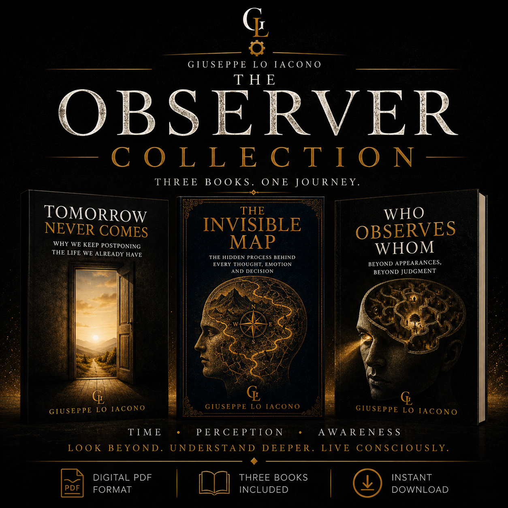
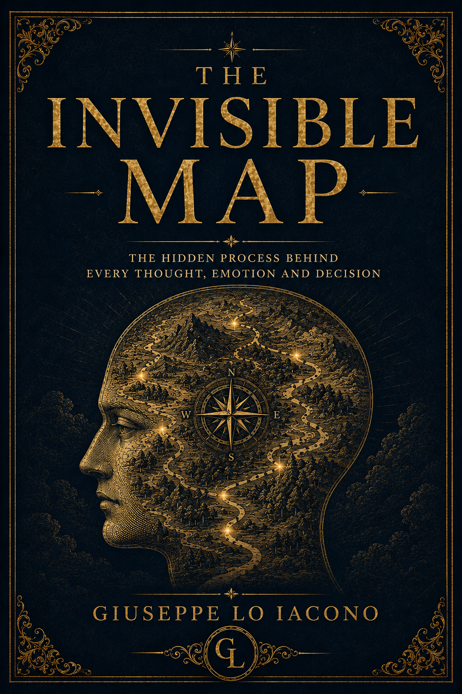
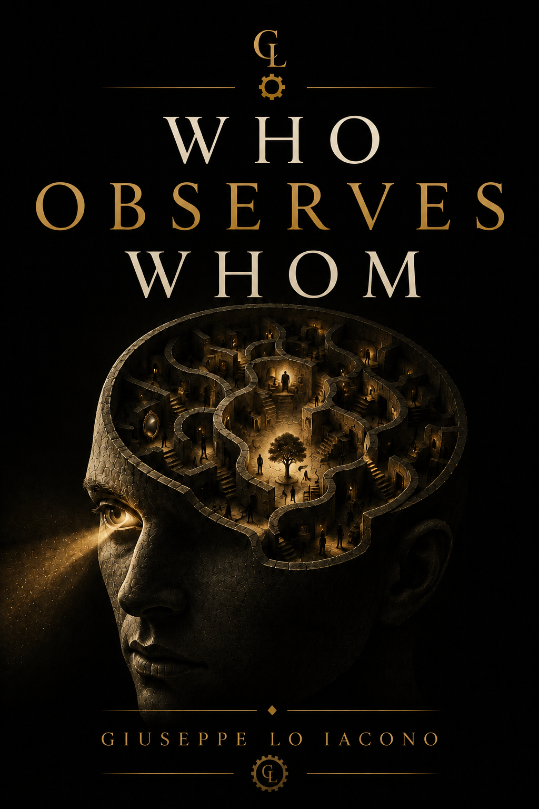

Tomorrow Never Comes
Un ebook che invita a riflettere sul tempo, sulla tendenza a rimandare e sul valore della vita che abbiamo già oggi.
Scopri il libro
Ogni libro nasce da una domanda.
Ogni raccolta è un invito a osservare il mondo da una prospettiva diversa.
Qui trovi le pubblicazioni digitali di Giuseppe Lo Iacono, organizzate tra raccolte in inglese, PDF singoli e libri disponibili su Amazon.
Scopri la collezione PDF singoli Amazon
Una raccolta digitale composta da tre opere collegate tra loro: Tomorrow Never Comes, The Invisible Map e Who Observes Whom.
Tre percorsi dedicati al tempo, alla percezione e alla consapevolezza. Una collezione pensata per chi desidera esplorare la mente, il modo in cui osserviamo la realtà e le domande che spesso rimandiamo.
Time · Perception · Awareness
Scopri la collezioneLe tre pubblicazioni della collezione possono essere acquistate anche singolarmente nella Library digitale.
Un ebook che invita a riflettere sul tempo, sulla tendenza a rimandare e sul valore della vita che abbiamo già oggi.
Scopri il libro
Un ebook sui processi invisibili che influenzano pensieri, emozioni, interpretazioni e decisioni.
Scopri il libro
Un percorso tra percezione, giudizio e consapevolezza, per interrogarsi sul modo in cui osserviamo gli altri e noi stessi.
Scopri il libroQuesta sezione raccoglie le opere pubblicate su Amazon collegate al catalogo internazionale.
Una storia intensa sul desiderio, sulle scelte, sulle emozioni e sulle verità nascoste che attraversano la vita dei personaggi.
Scopri il libro